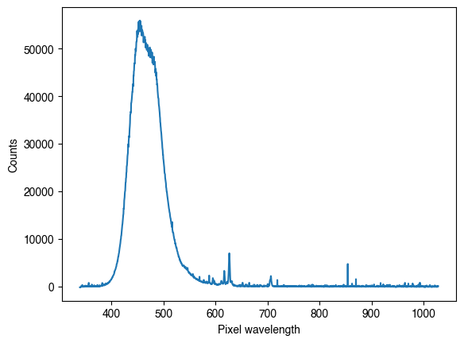

[7]:
import matplotlib.pyplot as plt
from pysilsub import observers
from luxpy import indvcmf
[22]:
indvcmf.compute_cmfs??
Signature:
indvcmf.compute_cmfs(
fieldsize=10,
age=32,
wl=None,
var_od_lens=0,
var_od_macula=0,
var_shft_LMS=[0, 0, 0],
var_od_LMS=[0, 0, 0],
norm_type=None,
out='lms',
base=False,
strategy_2=True,
odata0=None,
lms_to_xyz_method=None,
allow_negative_values=False,
normalize_lms_to_xyz_matrix=False,
)
Docstring:
Generate Individual Observer CMFs (cone fundamentals)
based on CIE2006 cone fundamentals and published literature
on observer variability in color matching and in physiological parameters.
Args:
:age:
| 32 or float or int, optional
| Observer age
:fieldsize:
| 10, optional
| Field size of stimulus in degrees (between 2° and 10°).
:wl:
| None, optional
| Interpolation/extraplation of :LMS: output to specified wavelengths.
| None: output original _WL
:var_od_lens:
| 0, optional
| Variation of optical density of lens.
:var_od_macula:
| 0, optional
| Variation of optical density of macula.
:var_shft_LMS:
| [0, 0, 0] optional
| Variation (shift) of LMS peak absorptance.
:var_od_LMS:
| [0, 0, 0] optional
| Variation of LMS optical densities.
:norm_type:
| None, optional
| - 'max': normalize LMSq functions to max = 1
| - 'area': normalize to area
| - 'power': normalize to power
:out:
| 'lms' or 'xyz', optional
| Determines output.
:base:
| False, boolean, optional
| The returned energy-based LMS cone fundamentals given to the
| precision of 9 sign. figs. if 'True', and to the precision of
| 6 sign. figs. if 'False'.
:strategy_2:
| True, bool, optional
| Use strategy 2 in github.com/ifarup/ciefunctions issue #121 for
| computing the weighting factor. If false, strategy 3 is applied.
:odata0:
| None, optional
| Dict with uncorrected ocular media and macula density functions and LMS absorptance functions
| None defaults to the ones stored in _DATA
:lms_to_xyz_method:
| None, optional
| Method to use to determine lms-to-xyz conversion matrix (options: 'asano', 'cietc197')
:allow_negative_values:
| False, optional
| Cone fundamentals or color matching functions should not have negative values.
| If False: X[X<0] = 0.
:normalize_lms_to_xyz_matrix:
| False, optional
| Normalize that EEW is always at [100,100,100] in XYZ and LMS system.
Returns:
:returns:
| - 'LMS' [or 'XYZ']: ndarray with individual observer equal area-normalized
| cone fundamentals. Wavelength have been added.
|
| [- 'M': lms to xyz conversion matrix
| - 'trans_lens': ndarray with lens transmission
| (no interpolation)
| - 'trans_macula': ndarray with macula transmission
| (no interpolation)
| - 'sens_photopig' : ndarray with photopigment sens.
| (no interpolation)]
References:
1. `Asano Y, Fairchild MD, and Blondé L, (2016),
Individual Colorimetric Observer Model.
PLoS One 11, 1–19.
<http://journals.plos.org/plosone/article?id=10.1371/journal.pone.0145671>`_
2. `Asano Y, Fairchild MD, Blondé L, and Morvan P (2016).
Color matching experiment for highlighting interobserver variability.
Color Res. Appl. 41, 530–539.
<https://onlinelibrary.wiley.com/doi/abs/10.1002/col.21975>`_
3. `CIE, TC1-36, (2006).
Fundamental Chromaticity Diagram with Physiological Axes - Part I
(Vienna: CIE).
<http://www.cie.co.at/publications/fundamental-chromaticity-diagram-physiological-axes-part-1>`_
4. `Asano's Individual Colorimetric Observer Model
<https://www.rit.edu/cos/colorscience/re_AsanoObserverFunctions.php>`_
5. `CIE TC1-97 Python code for cone fundamentals and XYZ cmf calculations
(by Ivar Farup and Jan Henrik Wold, (c) 2012-2017)
<http://github.com/ifarup/ciefunctions>`_
Source:
def compute_cmfs(fieldsize = 10, age = 32, wl = None,
var_od_lens = 0, var_od_macula = 0,
var_shft_LMS = [0,0,0], var_od_LMS = [0, 0, 0],
norm_type = None, out = 'lms', base = False,
strategy_2 = True, odata0 = None,
lms_to_xyz_method = None, allow_negative_values = False,
normalize_lms_to_xyz_matrix = False):
"""
Generate Individual Observer CMFs (cone fundamentals)
based on CIE2006 cone fundamentals and published literature
on observer variability in color matching and in physiological parameters.
Args:
:age:
| 32 or float or int, optional
| Observer age
:fieldsize:
| 10, optional
| Field size of stimulus in degrees (between 2° and 10°).
:wl:
| None, optional
| Interpolation/extraplation of :LMS: output to specified wavelengths.
| None: output original _WL
:var_od_lens:
| 0, optional
| Variation of optical density of lens.
:var_od_macula:
| 0, optional
| Variation of optical density of macula.
:var_shft_LMS:
| [0, 0, 0] optional
| Variation (shift) of LMS peak absorptance.
:var_od_LMS:
| [0, 0, 0] optional
| Variation of LMS optical densities.
:norm_type:
| None, optional
| - 'max': normalize LMSq functions to max = 1
| - 'area': normalize to area
| - 'power': normalize to power
:out:
| 'lms' or 'xyz', optional
| Determines output.
:base:
| False, boolean, optional
| The returned energy-based LMS cone fundamentals given to the
| precision of 9 sign. figs. if 'True', and to the precision of
| 6 sign. figs. if 'False'.
:strategy_2:
| True, bool, optional
| Use strategy 2 in github.com/ifarup/ciefunctions issue #121 for
| computing the weighting factor. If false, strategy 3 is applied.
:odata0:
| None, optional
| Dict with uncorrected ocular media and macula density functions and LMS absorptance functions
| None defaults to the ones stored in _DATA
:lms_to_xyz_method:
| None, optional
| Method to use to determine lms-to-xyz conversion matrix (options: 'asano', 'cietc197')
:allow_negative_values:
| False, optional
| Cone fundamentals or color matching functions should not have negative values.
| If False: X[X<0] = 0.
:normalize_lms_to_xyz_matrix:
| False, optional
| Normalize that EEW is always at [100,100,100] in XYZ and LMS system.
Returns:
:returns:
| - 'LMS' [or 'XYZ']: ndarray with individual observer equal area-normalized
| cone fundamentals. Wavelength have been added.
|
| [- 'M': lms to xyz conversion matrix
| - 'trans_lens': ndarray with lens transmission
| (no interpolation)
| - 'trans_macula': ndarray with macula transmission
| (no interpolation)
| - 'sens_photopig' : ndarray with photopigment sens.
| (no interpolation)]
References:
1. `Asano Y, Fairchild MD, and Blondé L, (2016),
Individual Colorimetric Observer Model.
PLoS One 11, 1–19.
<http://journals.plos.org/plosone/article?id=10.1371/journal.pone.0145671>`_
2. `Asano Y, Fairchild MD, Blondé L, and Morvan P (2016).
Color matching experiment for highlighting interobserver variability.
Color Res. Appl. 41, 530–539.
<https://onlinelibrary.wiley.com/doi/abs/10.1002/col.21975>`_
3. `CIE, TC1-36, (2006).
Fundamental Chromaticity Diagram with Physiological Axes - Part I
(Vienna: CIE).
<http://www.cie.co.at/publications/fundamental-chromaticity-diagram-physiological-axes-part-1>`_
4. `Asano's Individual Colorimetric Observer Model
<https://www.rit.edu/cos/colorscience/re_AsanoObserverFunctions.php>`_
5. `CIE TC1-97 Python code for cone fundamentals and XYZ cmf calculations
(by Ivar Farup and Jan Henrik Wold, (c) 2012-2017)
<http://github.com/ifarup/ciefunctions>`_
"""
# TC1-97 ciefunctions rounds fieldsize:
fieldsize_tmp = np.round(fieldsize,1)
if (fieldsize_tmp == 2) | (fieldsize_tmp == 10):
fieldsize = fieldsize_tmp
if odata0 is None:
odata = _DATA['odata']
else:
odata = odata0
if wl is None:
wl = odata['wls']
else:
wl = getwlr(wl3 = wl)
if lms_to_xyz_method is None:
lms_to_xyz_method = _LMS_TO_XYZ_METHOD
out_list = out.split(',')
# =======================================================================
# Create initial data arrays
# =======================================================================
# '_base' : 9 sign. figs.
# '_std' : standard number of sign. figs./decimal places
# '_all' : values given at 0.1 nm steps from 390 nm to 830 nm
# '_main' : values given at 1 nm steps from 390 nm to 830 nm
# '_spec' : values given at specified wavelengths
# wavelength arrays:
wl_all = odata['wls']#my_round(np.arange(390., 830. + .01, .1), 1)
wl_spec = wl
# LMS-base values (9 sign.figs.) at 0.1 nm steps from 390 nm to 830 nm;
# wavelengths in first row.
LMS_base_all, LMSq_, LMSa_, LMSe_o_max, rmd, docul = _LMS_energy(fieldsize = fieldsize, age = age,
var_od_lens = var_od_lens, var_od_mac = var_od_macula,
var_shft_LMS = var_shft_LMS, var_od_LMS = var_od_LMS,
norm_type = 'max', out = 'LMSe,LMSq,alpha_lms,LMSe_o_max,rmd,docul',
base = True, odata0 = odata) # note: base only applies to LMSe !
# Do sompe checks to save on calculation time (don't calculate anything not needed.):
wl_equal_to_all = np.array_equal(my_round(wl_spec,1), my_round(LMS_base_all[0,:],1))
if (not wl_equal_to_all) | ((('xyz' in out_list) | ('XYZ' in out_list) | ('M' in out_list)) & (lms_to_xyz_method == 'cietc197')):
# =======================================================================
# Create LMS spline functions
# =======================================================================
# base:
(wl_all, L_base_all, M_base_all, S_base_all) = LMS_base_all
L_base_spline = sp.interpolate.InterpolatedUnivariateSpline(wl_all, L_base_all)
M_base_spline = sp.interpolate.InterpolatedUnivariateSpline(wl_all, M_base_all)
S_base_spline = sp.interpolate.InterpolatedUnivariateSpline(wl_all, S_base_all)
# =======================================================================
# Compute the LMS-base cone fundamentals
# =======================================================================
if (not wl_equal_to_all):
# - LMS-base values (9 sign. figs) for specified wavelengths;
# wavelengths in first row.
LMS_base_spec = chop(_compute_LMS(wl_spec, L_base_spline, M_base_spline, S_base_spline, base = True))
else:
LMS_base_spec = chop(LMS_base_all)
LMS = LMS_base_spec
else:
LMS = chop(LMS_base_all)
# =========================================================================
# Compute the cone-fundamental-based XYZ tristimulus functions
# =========================================================================
if ('xyz' in out_list) | ('XYZ' in out_list) | ('M' in out_list):
if lms_to_xyz_method == 'asano':
XYZ, M = lmsb_to_xyzb(LMS, fieldsize, out = 'xyz,M', allow_negative_values = allow_negative_values)
elif lms_to_xyz_method == 'cietc197':
# Vλ and weighting factors of the L and M cone fundamentals:
# - Cone-fundamental-based V(λ) values (7 sign. figs.) at 0.1 nm steps
# from 390 nm to 830 nm; wavelengths in first column
# - Weights of L and M cone fundamentals in V(λ) synthesis
# Re-use already calculated LMSe, LMSq, ...
(V_std_all, LM_weights) = _Vl_energy_and_LM_weights(fieldsize = fieldsize, age = age,
strategy_2 = strategy_2,
LMSa = LMSa_, LMSq = LMSq_,
LMSe = LMS_base_all, LMSe_o_max = LMSe_o_max,
odata0 = odata0)
# Create spline function for Vlambda:
wl_all, V_std_all = V_std_all
V_std_spline = sp.interpolate.InterpolatedUnivariateSpline(wl_all, V_std_all)
# Determine reference diagram
xyz_reference = _xyz_interpolated_reference_system(fieldsize, _CMF['1931_2']['bar'].copy(), _CMF['1964_10']['bar'].copy())
# - Non-renormalised tranformation matrix (8 decimal placed)
# - Non-renormalised CIE cone-fundamental-based XYZ tristimulus
# values (7 sign. figs) for specified wavelengths; wavelengths in first row.
# - Ditto renormalized
(trans_mat_std, XYZ_std_spec, trans_mat_std_N, XYZ_std_spec_N) = _compute_XYZ(L_base_spline,
M_base_spline,
S_base_spline,
V_std_spline,
LMS_base_spec,
LMS_base_all,
LM_weights,
xyz_reference)
# M = trans_mat_std, # unnormalized xyzbar! (when specified wavelenght range = [390,830,1] then XYZ_spec == XYZ_spec_N!!)
# XYZ = XYZ_std_spec
M = trans_mat_std_N # re-normalized xyzbar! (for specified wavelenght range)
XYZ = XYZ_std_spec_N
# Output extra:
if 'trans_lens' in out_list:
trans_lens = docul.copy()
trans_lens[1:,:] = 10**(-docul[1:,:])
if 'trans_macula' in out_list:
trans_macula = rmd.copy()
trans_macula[1:,:] = 10**(-rmd[1:,:])
if 'sens_photopig' in out_list:
sens_photopig = LMSa_.copy()
sens_photopig[1:,:] = LMSa_[1:,:] * LMSa_[:1,:]
# Change normalization of M to
# ensure that EEW is always at [100,100,100] in XYZ system:
if ('M' in out_list) & (normalize_lms_to_xyz_matrix == True):
Mi = np.linalg.inv(M) # M: lms->xyz; Mi: xyz->lms
Min = math.normalize_3x3_matrix(Mi, xyz0 = np.array([[1,1,1]])) # normalize Mi matrix
M = np.linalg.inv(Min) # calculate new lms->xyz normalized matrix
LMS[1:,:] = np.dot(Min,XYZ[1:,:]) # calculate lmsbar such that they match M!
if (('xyz' in out.lower().split(',')) & ('lms' in out.lower().split(','))):
# Change normalization of LMS, XYZ:
if norm_type is not None:
LMS = spd_normalize(LMS, norm_type = norm_type)
XYZ = spd_normalize(XYZ, norm_type = norm_type)
else:
if ('xyz' in out.lower().split(',')):
LMS = XYZ
out = out.replace('xyz','LMS').replace('XYZ','LMS')
if ('lms' in out.lower().split(',')):
out = out.replace('lms','LMS')
# Change normalization of LMS:
if norm_type is not None:
LMS = spd_normalize(LMS, norm_type = norm_type)
if base == False:
if ('lms' in out.lower().split(',')):
LMS = sign_figs(LMS, 6) # only LMS. XYZ is output at 7 sign. digit level in tc197 Python code
if (out == 'LMS') | (out == 'lms'):
return LMS
elif (out == 'XYZ') | (out == 'xyz'):
return XYZ
elif (out == 'LMS,M') | (out == 'lms,M'):
return LMS, M
elif (out == 'XYZ,M') | (out == 'xyz,M'):
return XYZ, M
elif (out == 'LMS,XYZ,M') | (out == 'lms,xyz,M'):
return LMS, XYZ, M
elif out == 'M':
return M
elif (out == 'LMS,trans_lens,trans_macula,sens_photopig'):
return LMS,trans_lens, trans_macula, sens_photopig
elif (out == 'LMS,trans_lens,trans_macula,sens_photopig,LMSa'):
return LMS, trans_lens, trans_macula, sens_photopig, odata['LMSa'].copy()
else:
return eval(out)
File: ~/opt/anaconda3/envs/pysilsub/lib/python3.10/site-packages/luxpy/toolboxes/indvcmf/individual_observer_cmf_model.py
Type: function
[19]:
observer = observers.ColorimetricObserver(50, 3)
cmfs = indvcmf.compute_cmfs(age=50, fieldsize=3)
plt.plot(cmfs[0], cmfs[1:].T)
observer.plot_action_spectra(ls=':')
[19]:
<AxesSubplot: xlabel='Wavelength (nm)', ylabel='Spectral sensitivity'>

[ ]: